세 세대가 아니라 세 가지 문제
RAG, CAG, KAG는 요즘 AI(Artificial Intelligence) 이야기에서 자주 같이 나와요. 그래서 많은 사람이 이 셋을 한 줄로 세워서 이해해요. 아래 슬라이드처럼 RAG는 기본형, CAG는 개선형, KAG는 고급형이라는 식이에요.
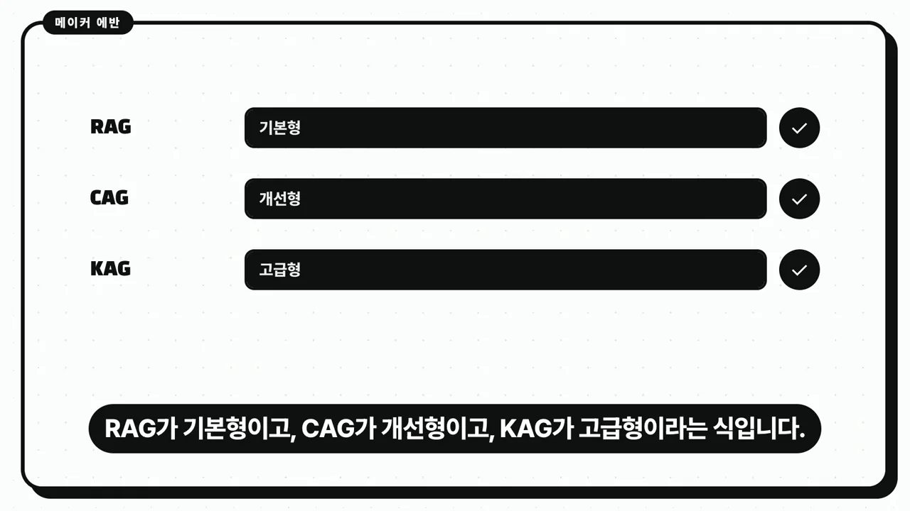
발표자는 기업용 AI를 실제로 만들어 보면 이 이해부터 틀렸다는 걸 알게 된다고 말해요. 셋은 위아래 관계가 아니라 옆으로 나란한 관계예요. 각자 다른 문제를 풀어요.
- RAG — 많은 외부 지식 중에서 관련 있는 걸 찾아오는 문제
- CAG — 잘 안 바뀌는 지식을 미리 올려두고 계산 결과를 재사용하는 문제
- KAG — 엔티티 사이의 관계와 규칙을 따라 여러 단계로 추론하는 문제
약어 한 글자 차이처럼 보여도 뒤에 있는 엔지니어링 트레이드오프가 완전히 달라요. 영상은 아래 세 논문을 기준으로 각각 무엇을 풀고 어디서 깨지는지 봐요. 카드 아래 숫자가 논문이 나온 시점이에요.
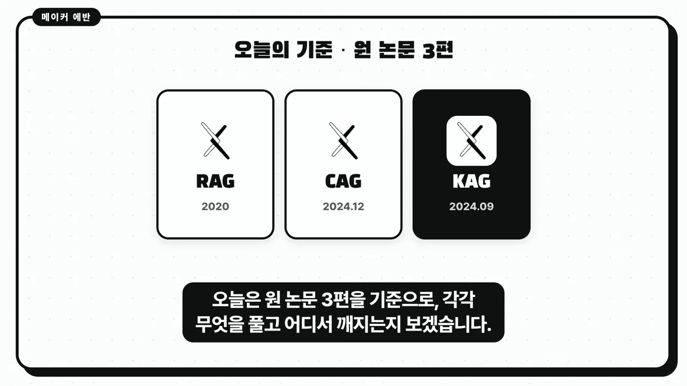
RAG: 큰 지식에서 필요한 조각만 찾아오기
RAG라는 이름은 2020년 메타 연구진 논문에서 나왔어요. 검색 증강 생성, 즉 모델이 답을 만들기 전에 외부 문서를 먼저 검색해서 같이 넣는 방식이에요.
왜 필요할까요. 회사 문서가 수만 개이고 매일 새로 올라온다고 해 봐요. 질문마다 그 문서를 전부 모델에 넣을 수는 없어요. 문맥 창에 안 들어가고, 들어가도 비용과 지연이 감당이 안 돼요. 그래서 질문과 관련 있는 조각만 골라서 넣어요.
두 개의 흐름: 미리 쌓기와 질문할 때 꺼내기
첫 번째 슬라이드는 미리 해 두는 일이에요. 문서를 청크로 자르고, 임베딩으로 바꿔서, 오른쪽 끝 벡터 DB(Database)에 넣어요.
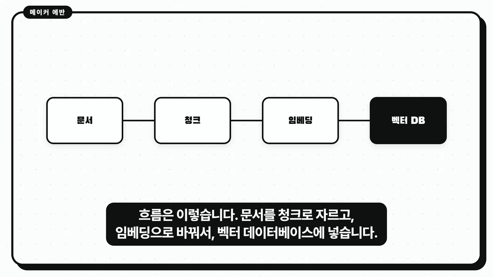
두 번째 슬라이드는 질문이 왔을 때예요. 질문도 임베딩으로 바꾸고, 가장 가까운 청크 k개를 꺼내 프롬프트에 붙여요.
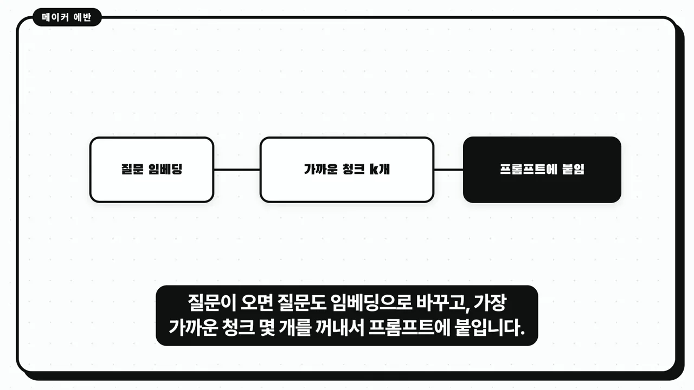
RAG의 목표는 가장 적은 문맥으로 가장 정확한 근거를 찾는 거예요. 답에 어떤 문서를 근거로 썼는지 출처를 붙일 수 있다는 것도 큰 장점이에요. 문서가 바뀌면 인덱스만 다시 만들면 되고, 모델을 다시 학습시킬 필요가 없어요.
진짜 어려움은 데모 다음에 와요
여기까지는 데모로 하루면 만들어요. 발표자는 실제 어려움이 벡터 DB를 연결하는 데 있지 않다고 말해요. 다섯 가지를 꼽아요.
첫째, 청크를 어떻게 자를지. 아래 슬라이드에서 왼쪽 '표 하나'가 청크 A(앞 절반)와 청크 B(뒤 절반)로 갈렸어요. 어느 쪽을 꺼내도 답이 반쪽이에요.
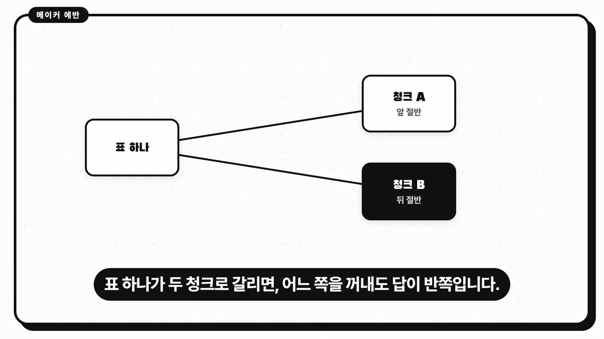
둘째, 검색이 왜 실패했는지 찾는 일. 표의 예시를 보면 질문은 '연차 쓰는 법', 문서는 '휴가 신청 절차'라고 썼어요. 뜻은 같은데 단어가 달라서 문서가 '상위권 밖'으로 밀려요.
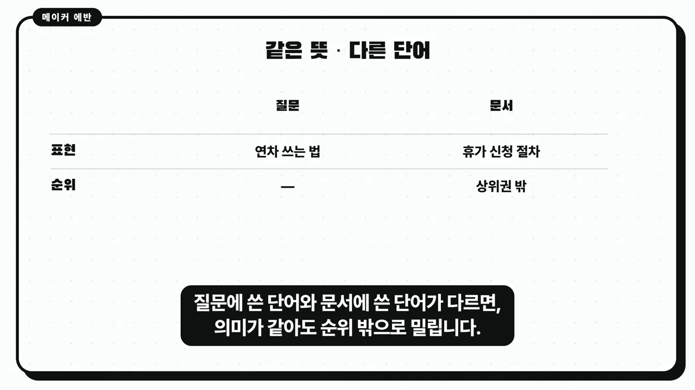
셋째, 리랭킹. 일차로 많이 꺼내고, 더 비싼 모델로 다시 순서를 매겨야 해요. 슬라이드는 '일차 검색 50개 → 리랭커 → 상위 5개' 흐름으로 그렸어요.
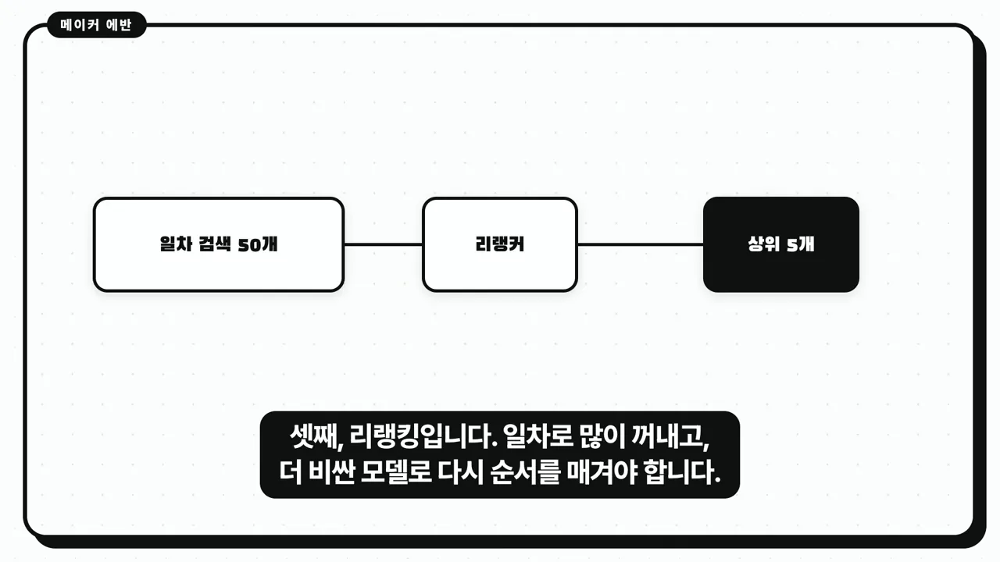
넷째, 낡은 문서. 같은 규정이 2022년(v1), 2024년(v2), 최신(v3)으로 세 번 개정됐어요. 정답은 v3인데, 세 버전 모두 검색 대상에 남아 있으면 검색은 옛 버전을 꺼내 올 수 있어요.
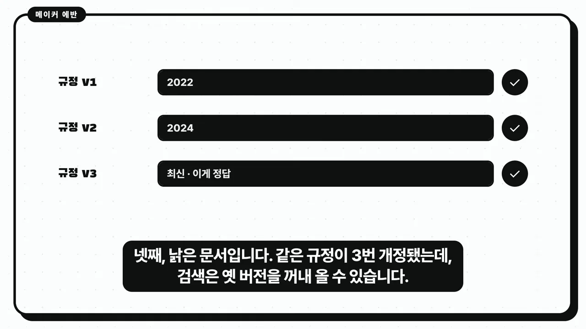
다섯째, 최종 답 검증. 여기서 발표자는 중요한 구분을 하나 짚어요. 관련 있는 걸 찾았다고 맞는 사실을 찾은 건 아니에요. 맞는 사실을 찾았다고 모델이 맞게 답한다는 보장도 없어요. 아래 세 칸이 그 세 단계예요.
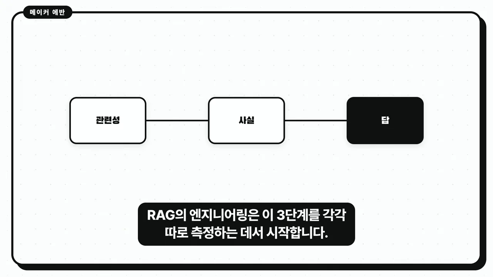
그래서 RAG 엔지니어링은 단계를 따로 측정하는 데서 시작해요. 검색 단계는 정답 문서가 상위 몇 개 안에 들어왔는지로 재요. 답변 단계는 답의 모든 주장이 꺼내 온 청크 안에 있는지로 따로 재요.
CAG: 작고 안정적인 지식을 미리 올려 재사용하기
CAG 논문은 2024년 12월에 나왔고, 제목이 꽤 도발적이에요. 'Don't Do RAG', 즉 RAG를 하지 말라는 거예요. 저자들의 질문은 단순해요. 지식이 작고 안정적이면 왜 매번 검색하느냐는 거예요.
요즘 모델은 문맥 창이 10만 토큰을 넘어요. 지식 전체가 거기 들어간다면 검색 단계 자체를 없앨 수 있어요. 방법은 세 단계예요.
- 관련 문서를 전부 미리 문맥에 올려요
- 모델이 그 문서를 읽으며 만든 중간 계산값, KV 캐시를 저장해 둬요
- 질문이 오면 저장한 KV 캐시를 불러오고, 질문 부분만 새로 계산해요
세 번째 단계가 아래 슬라이드예요. 왼쪽 '저장된 KV 캐시'에 '+ 질문만 계산'을 더하면 바로 '답'이 나와요. RAG 그림에 있던 검색 칸이 아예 없어요.
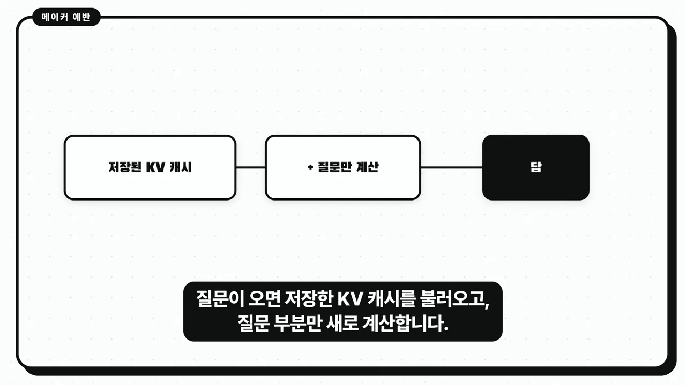
검색이 없으니 검색 지연이 사라지고, 엉뚱한 문서를 고르는 오류도 사라져요. 논문은 SQuAD와 HotpotQA 벤치마크에서 RAG와 비교했어요. 지식 범위가 제한된 경우 CAG가 RAG와 비슷하거나 더 나은 결과를 냈다고 보고해요.
시스템도 단순해져요. 아래 '필요한 부품' 표에서 RAG 열은 임베딩, 벡터 DB, 리랭커가 모두 '필요', CAG 열은 모두 '없음'이에요. 질문할 때마다 문서 전체를 다시 읽지 않으니 답이 나오는 시간도 크게 줄어요.
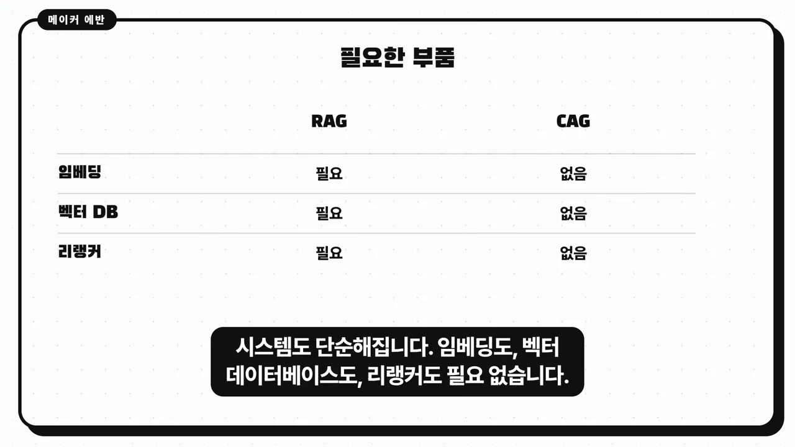
CAG는 공짜 장기 기억이 아니에요
문서를 프롬프트에 몽땅 넣는다고 모든 게 해결되지는 않아요. 발표자는 네 가지 조건을 꼽아요.
첫째, 문맥 용량. 지식이 문맥 창을 넘는 순간 이 방식은 쓸 수 없어요.
둘째, 긴 문맥 안에서 정확도가 떨어져요. 아래 슬라이드는 2023년 연구 'Lost in the Middle'의 결과예요. 문맥의 앞과 끝에 있는 정보는 '잘 씀', 가운데에 있는 정보는 '덜 씀'이에요.
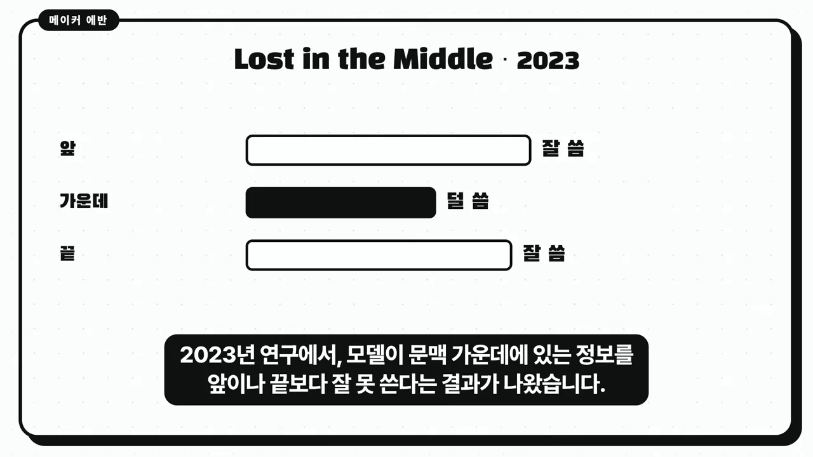
셋째, 캐시 적중률. 실무에서 CAG에 가장 가까운 건 프롬프트 캐싱이에요. 아래 슬라이드는 앤트로픽 입력 단가를 1로 놓고 비교했어요. 캐시에서 읽으면 0.10배, 즉 10분의 1이에요.
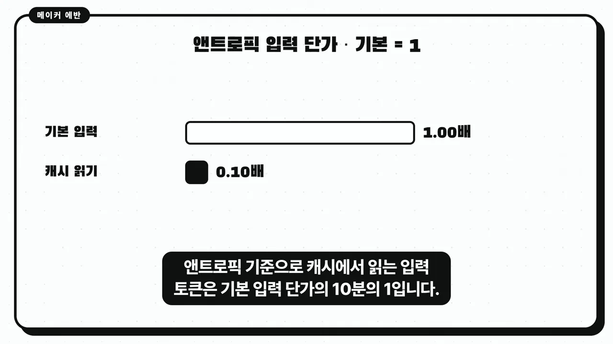
대신 캐시에 처음 쓸 때는 단가가 더 비싸요. 다음 슬라이드에서 캐시 쓰기는 1.25배예요. 기본 유지 시간은 5분이에요.
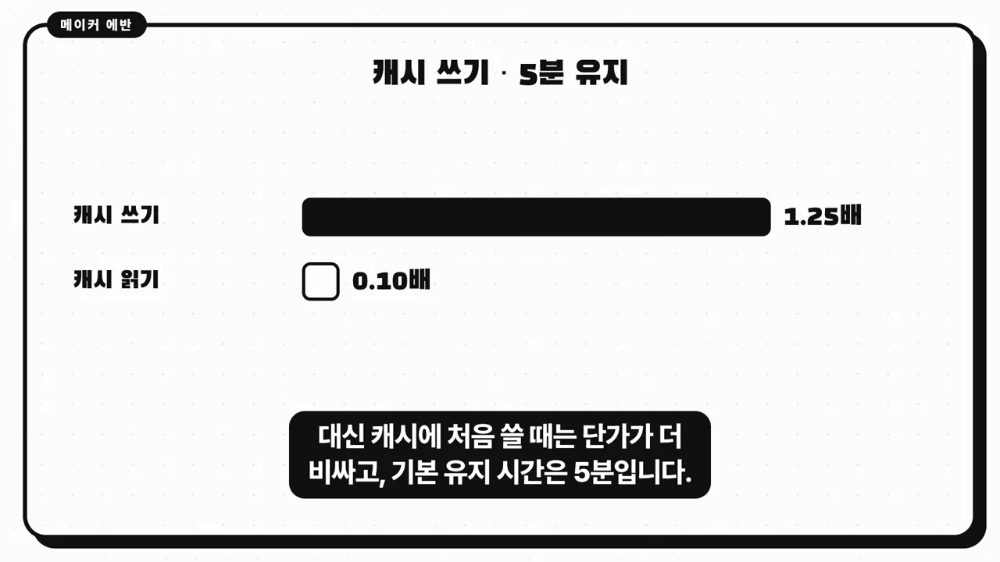
그래서 질문이 오는 간격이 중요해요. 위 줄 '질문 간격 > 5분'이면 캐시가 만료돼서 '다시 쓰기'를 반복하고, 아래 줄 '질문 몰림'이면 '계속 적중'해요. 질문이 띄엄띄엄 오면 오히려 쓰기 비용만 반복해서 내요.
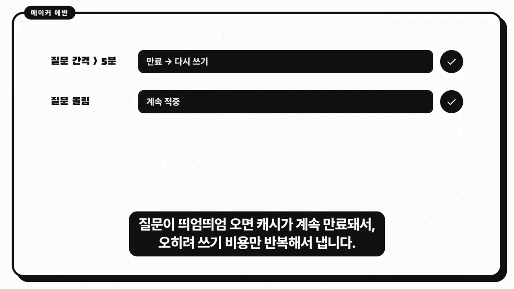
넷째, 지식 업데이트. 문서 한 줄이 바뀌면 그 뒤의 캐시를 다시 만들어야 해요.
정리하면 CAG는 작고, 안정적이고, 자주 묻는 지식에서 가장 빛나요.
KAG: 관계를 따라 여러 단계로 추론하기
KAG는 앤트 그룹이 2024년 9월에 낸 논문이에요. 이 논문은 RAG의 한계를 두 가지로 짚어요.
- 벡터 유사도와 추론에 필요한 관련성 사이에 간격이 있어요. 벡터가 비슷하다고 추론에 필요한 문서인 건 아니에요.
- 숫자, 시간 관계, 전문가 규칙 같은 지식의 논리에 둔감해요.
멀티홉 질문 하나로 보는 RAG의 빈틈
발표자의 예시 질문은 이래요. '이 공급업체가 납품한 부품 중에, 작년 이후 계약이 만료된 것의 담당자는 누구인가.' 비슷한 문서 하나를 찾는다고 풀리지 않아요. 아래 슬라이드처럼 공급업체에서 부품으로, 부품에서 계약으로, 계약에서 담당자로 건너가야 해요.
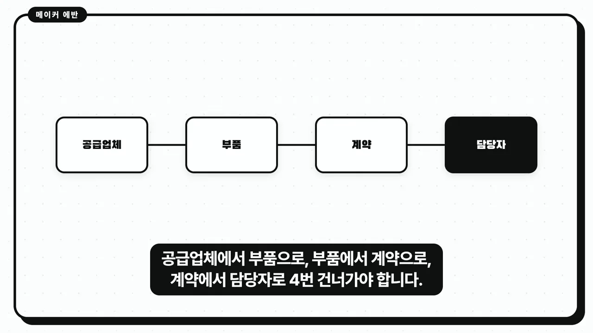
게다가 중간에 규칙이 하나 끼어 있어요. 다음 슬라이드에서 강조된 '계약' 칸 아래에 '작년 이후 만료'라는 날짜 조건이 붙어 있어요. 의미가 비슷한 청크를 모으는 방식은 이 연결 고리 중 하나만 빠져도 답을 못 내요.
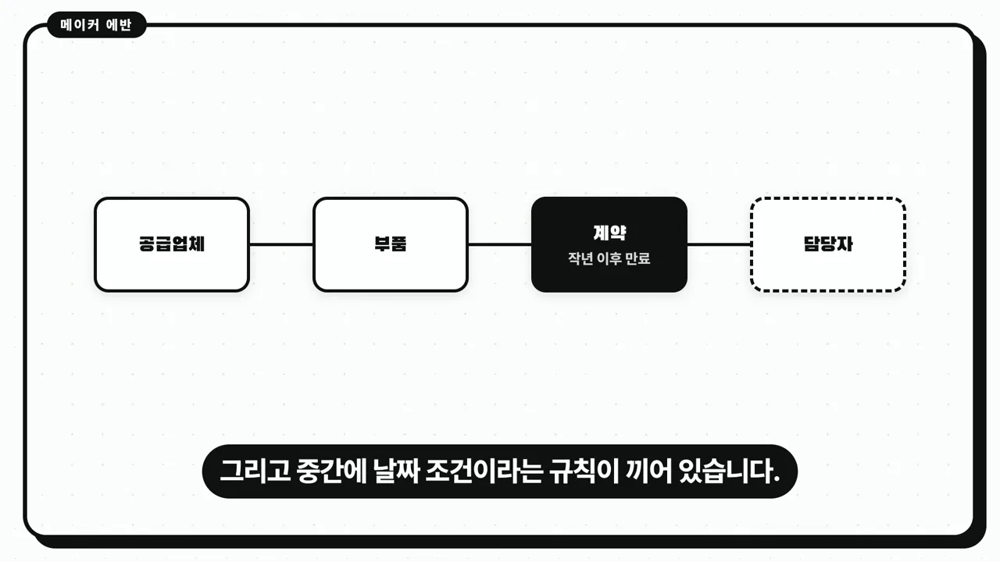
KAG는 관계를 지식 그래프로 정리해요
KAG는 이런 질문을 위해 엔티티와 관계를 지식 그래프로 정리해요. 공급업체, 부품, 계약, 사람, 날짜를 노드로 두고, 그 사이 관계를 선으로 이어요. 아래 슬라이드에선 계약 노드에서 담당자 노드로 선이 따로 내려가요.
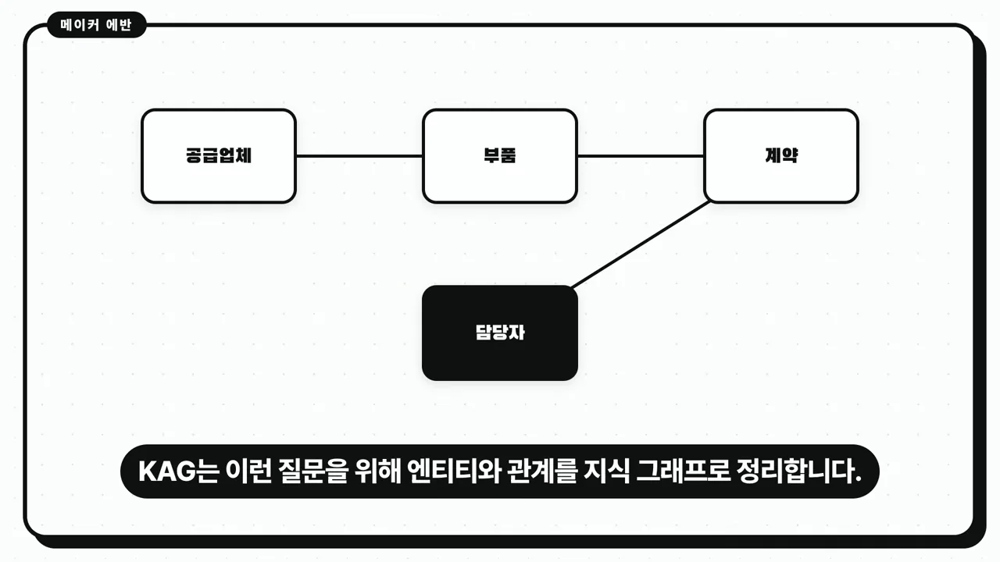
논문이 제시하는 다섯 가지 구성 요소
영상은 다섯 요소를 슬라이드 한 장씩 따로 보여 줘요. 아래 그림은 그 다섯 장을 한 줄로 모은 거예요. 두 번째 요소는 그래프의 노드에서 원문으로, 원문에서 노드로 양쪽으로 찾아갈 수 있게 연결해요.
세 번째 요소인 하이브리드 추론 엔진은 아래처럼 움직여요. 복잡한 질문을 여러 단계의 논리식으로 쪼개고, 단계마다 그래프 질의와 검색과 계산을 섞어 써요.
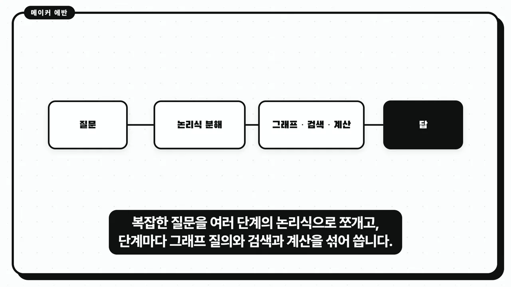
논문이 보고한 결과
멀티홉 질의응답에서 기존 방법보다 F1 점수가 2Wiki에서 19.6%, HotpotQA에서 33.5% 상대적으로 올랐다고 보고해요. 슬라이드 제목에도 'F1 상대 향상'이라고 적혀 있어요.
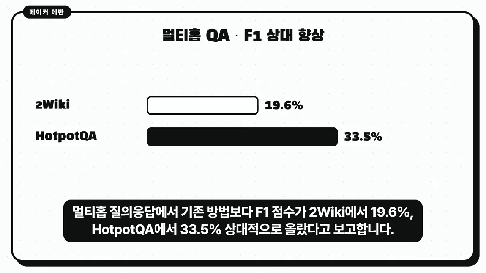
논문은 앤트 그룹 내부의 전자정부 질의응답과 전자 헬스 질의응답에도 적용했다고 해요. 구현체는 깃허브에 OpenSPG/KAG라는 이름으로 공개돼 있어요.
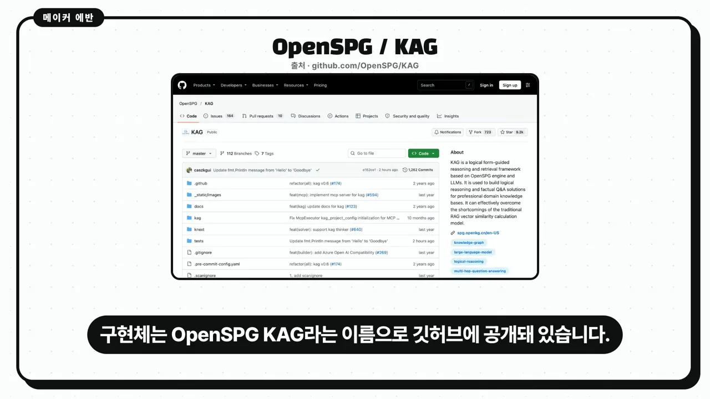
셋을 나란히 놓고 고르는 순서
이제 셋을 나란히 놓아요. 영상은 '언제 쓰나' 표를 한 칸씩 채워 가요. 지식 줄을 보면 RAG는 '크고 자주 바뀜', CAG는 '작고 안정적', KAG는 '관계가 답을 결정'이에요.
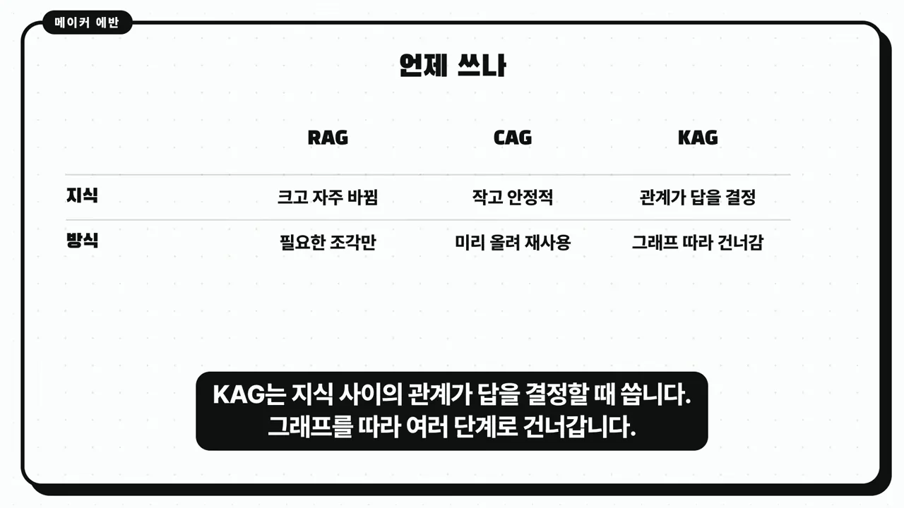
영상은 이어서 준비 비용과 실패하는 모습도 비교해요. 준비 비용은 표 없이 말과 개별 슬라이드로만 설명해서, 영상의 슬라이드 두 장과 함께 아래 표 하나로 모았어요.
| RAG | CAG | KAG | |
|---|---|---|---|
| 지식 | 크고 자주 바뀜 | 작고 안정적 | 관계가 답을 결정 |
| 방식 | 질문마다 필요한 조각만 꺼냄 | 전부 미리 올려두고 재사용 | 그래프를 따라 여러 단계로 건너감 |
| 준비 비용 | 청킹과 임베딩 파이프라인 | 준비는 거의 없음, 대신 캐시 운영 비용 | 그래프 구축·유지, 셋 중 가장 큼 |
| 실패 모습 | 엉뚱한 청크를 꺼내 옴 | 긴 문맥 속에서 놓치거나 옛 캐시로 답함 | 그래프가 틀리면 틀린 관계를 따라 자신 있게 추론 |
실패 모습은 아래 '어떻게 틀리나' 슬라이드에 짧게 정리돼 있어요. 엉뚱한 청크, 놓침·옛 캐시, 틀린 관계로 확신이에요.
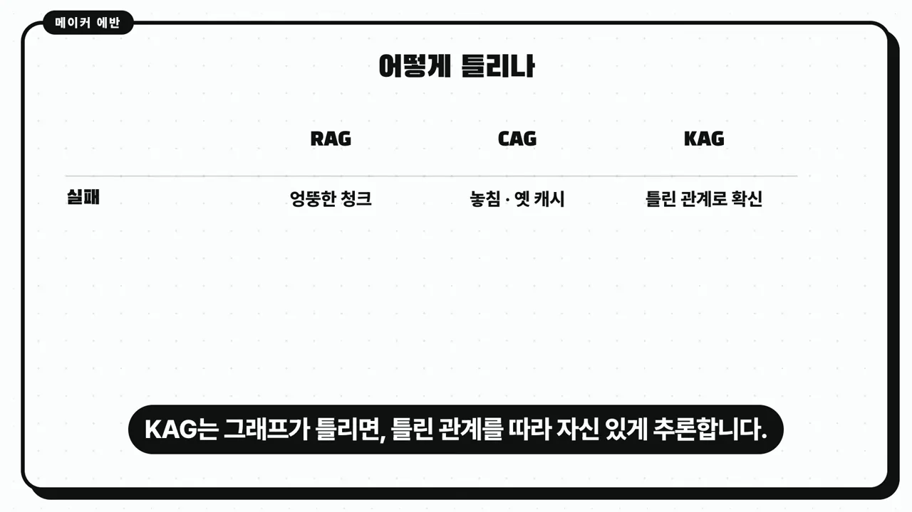
그래서 발표자의 결론은 셋이 같은 축 위의 상중하가 아니라 서로 다른 축이라는 거예요. 아래 슬라이드에서 '기업 지식 문제' 하나에서 세 갈래가 나오고, 각 상자에 '다른 축'이라고 적혀 있어요.
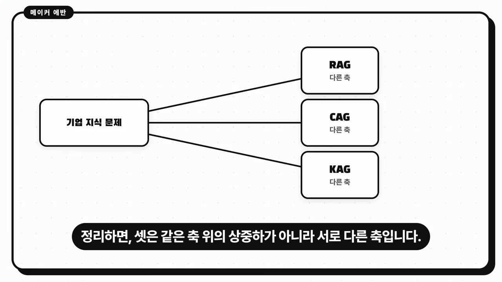
고르는 순서: 다섯 가지 질문
그럼 실제로는 어떤 순서로 고를까요. 발표자는 질문 다섯 개를 차례로 던져요. 아래 그림은 앞의 세 질문이 어느 쪽으로 가르는지 그린 거예요.
flowchart TB A["1. 지식 전체가 문맥 창에 들어가나?"] -->|"들어가고 잘 안 바뀜"| B["긴 문맥 + 프롬프트 캐싱부터"] A -->|"안 들어가거나 매일 바뀜"| C["검색 시스템을 만들 가치가 있음"] C --> D["2. 답이 문서 하나에서 나오나?"] D -->|"대부분 그렇다"| E["RAG로 충분"] D -->|"여러 엔티티를 건너감"| F["관계 구조가 필요"] F --> G["3. 관계가 이미 업무 DB에 있나?"] G -->|"있다"| H["SQL 질의·업무 API를 도구로 먼저"] G -->|"없다"| I["그래프 구축 검토"]
- 지식의 크기 — 전부 합쳐서 문맥 창에 들어가는지 봐요. 들어가고 잘 안 바뀌면 긴 문맥과 프롬프트 캐싱으로 시작해요. 안 들어가거나 매일 바뀌면 검색 시스템을 만들 가치가 있어요.
- 질문의 모양 — 대부분 문서 하나에서 답이 나오는 질문이면 RAG로 충분해요. 여러 엔티티를 건너가야 답이 나오면 관계 구조가 필요해요.
- 관계가 이미 어디에 있나 — 업무 데이터베이스에 있다면 그래프를 새로 만들기 전에 SQL(Structured Query Language) 질의와 업무 API(Application Programming Interface)를 도구로 붙여 봐요.
- 검증을 어디에 넣을지
- 비용 — 성능이 오른 만큼 비용과 유지 부담을 감당할 가치가 있는지 봐요.
세 번째 질문이 아래 슬라이드예요. 왼쪽 '에이전트'가 오른쪽 'SQL 질의'와 '업무 API'를 도구로 불러요. 에이전트가 데이터베이스를 직접 조회하면 그래프 없이도 멀티홉 질문 상당수가 풀린다는 게 발표자의 말이에요.
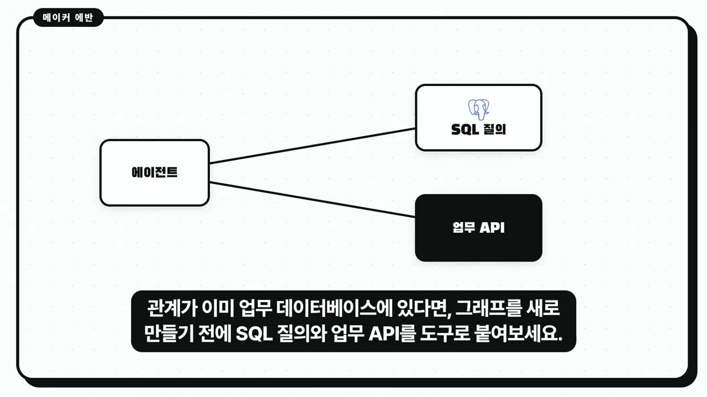
마지막 비용 질문에서 발표자는 기준을 하나 줘요. 정확도가 2% 오르는데 유지 인력이 1명 더 필요하다면, 대부분은 안 하는 게 맞다는 거예요.
반론과 운영에서 정말 결정하는 것
발표자는 여기서 반대 의견도 봐야 한다며 네 가지를 짚어요.
첫째, 지식 그래프는 만병통치약이 아니에요. 그래프를 만드는 과정 자체를 대부분 언어 모델로 추출하는데, 여기서 엔티티와 관계가 틀리게 들어가요. 아래 슬라이드처럼 '틀린 관계'가 곧장 '자신 있는 오답'으로 이어져요.
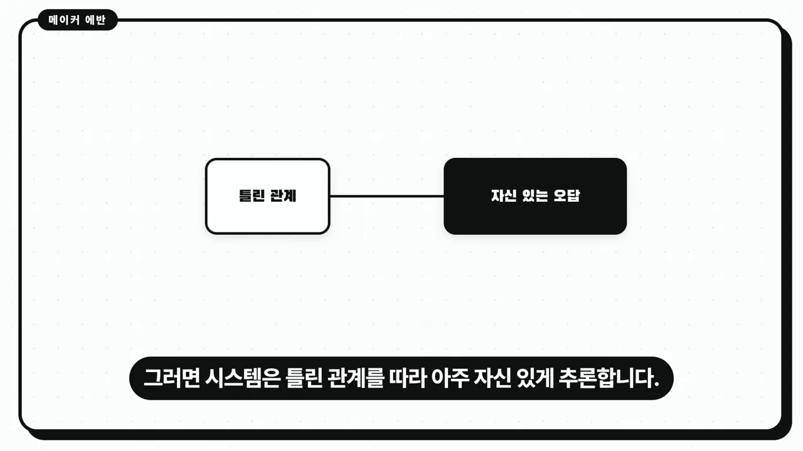
둘째, 벤치마크 점수와 운영 성능은 달라요. 2Wiki와 HotpotQA는 멀티홉 질문을 일부러 모은 데이터셋이에요. 내 회사 질문이 그런 모양이 아니라면 33.5% 같은 상승폭은 그대로 오지 않아요.
셋째, CAG 논문의 결론엔 조건이 붙어 있어요. 지식 범위가 제한된 경우라는 조건이에요. 제목만 보고 RAG를 버리면 지식이 커지는 순간 처음부터 다시 만들어야 해요.
넷째, 실제 시스템은 대부분 섞어 써요. 자주 묻는 핵심 문서는 캐시에 올리고, 나머지는 검색하고, 관계 질문만 그래프로 보내요. 셋 중 하나를 고르는 문제가 아니라 질문 유형별로 길을 나누는 문제에 가까워요.
운영에서 실제로 무너지는 곳
많은 AI 데모가 똑똑해 보이는 데는 이유가 있어요. 미리 준비한 질문 몇 개에만 답하면 되기 때문이에요. 운영에 들어가면 고객은 데모처럼 질문하지 않아요. 아래 카드 네 장이 그때 생기는 일이에요. 낡은 지식, 데이터 충돌, 권한 변경, 모델 오류예요.
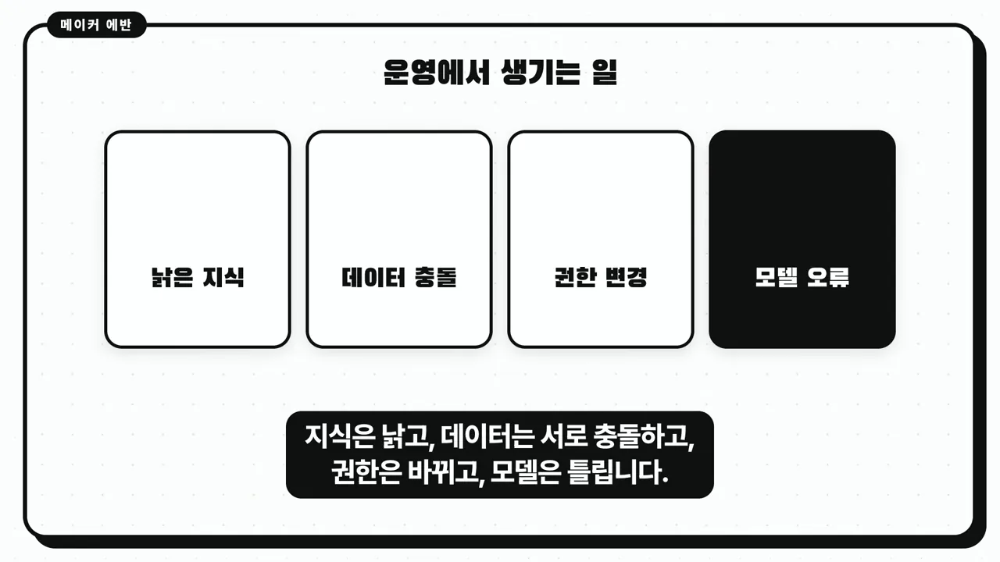
그래서 시스템을 납품할 수 있는지 결정하는 건 어떤 약어를 썼느냐가 아닌 경우가 많아요. 발표자는 네 가지를 설계했는지 물어요.
- 지식을 어떻게 가져오는지 설계했나요?
- 근거를 어떻게 검증하는지 설계했나요?
- 업무 규칙을 어디서 강제하는지 설계했나요?
- 실패했을 때 어떻게 처리하는지 설계했나요?
이 네 가지가 비어 있으면 어떤 약어를 붙여도 운영에서 무너져요. 특히 에이전트가 수십 개 도구를 부르며 업무 시스템에 직접 손을 대기 시작하면 더 그래요. 밑에 깔린 지식이 엉망이면 할 수 있는 일이 많을수록 오류도 더 크게 퍼져요. 반대로 네 가지가 있으면 단순한 RAG로도 꽤 오래 버텨요.
정리
마지막 슬라이드는 처음의 세 갈래 그림으로 돌아와요. RAG는 '찾아오기', CAG는 '재사용', KAG는 '관계 추론'이에요. 고르는 순서는 지식의 크기, 질문의 모양, 관계가 이미 있는 곳, 검증 위치, 그리고 비용이에요.
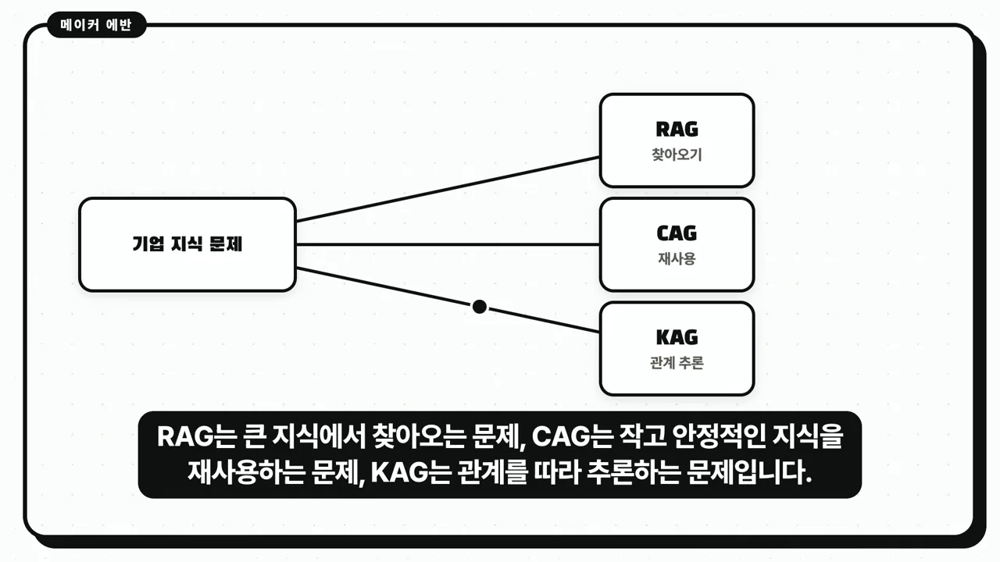
진짜 실력은 새 기술을 다 붙이는 게 아니라, 어떤 문제에 무엇을 쓰고, 언제는 아예 안 써도 되는지 아는 겁니다.
— 영상 10:29